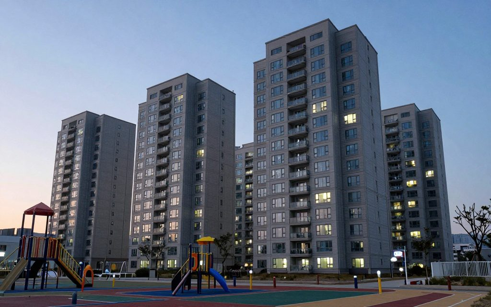
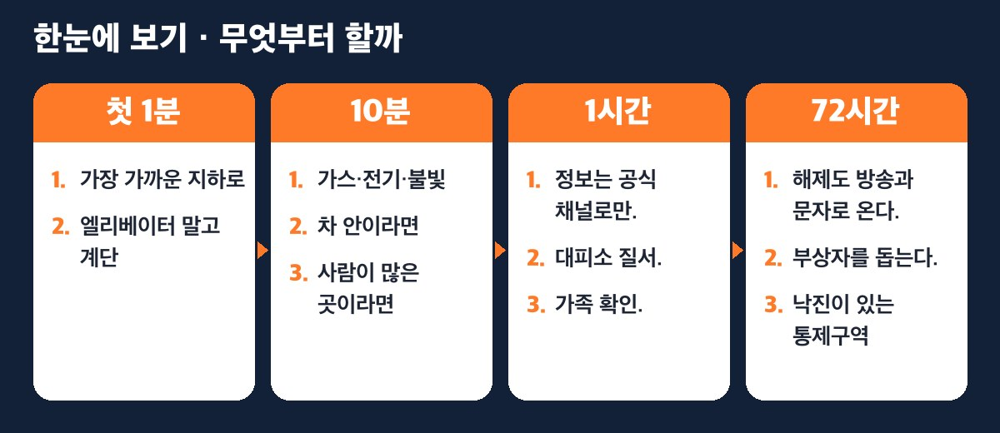
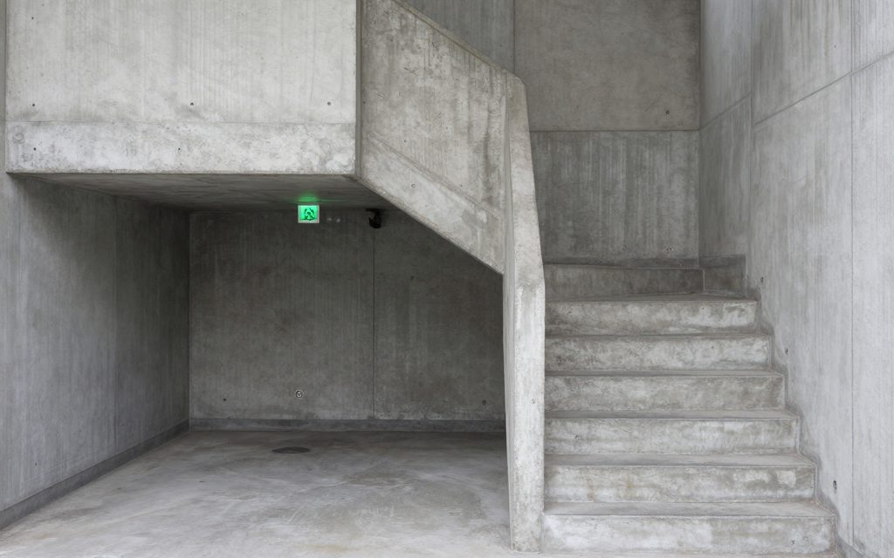
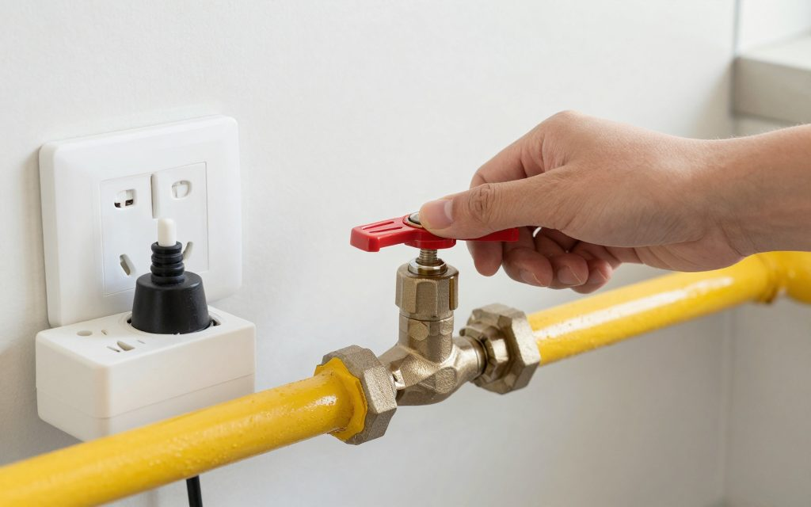
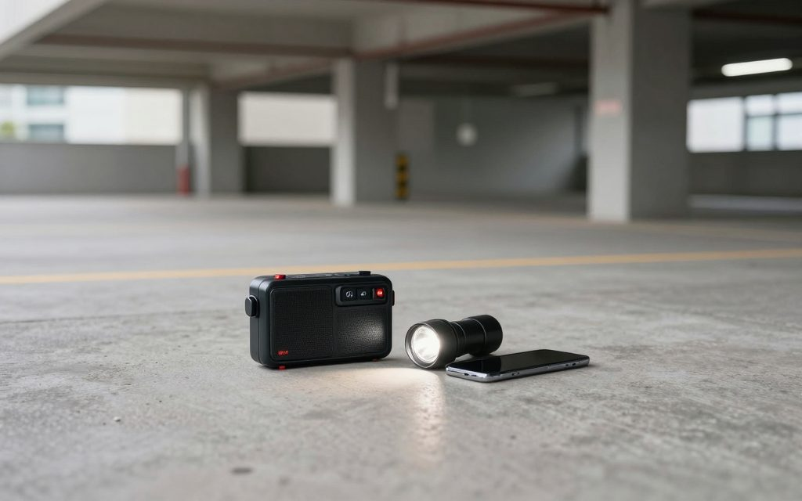
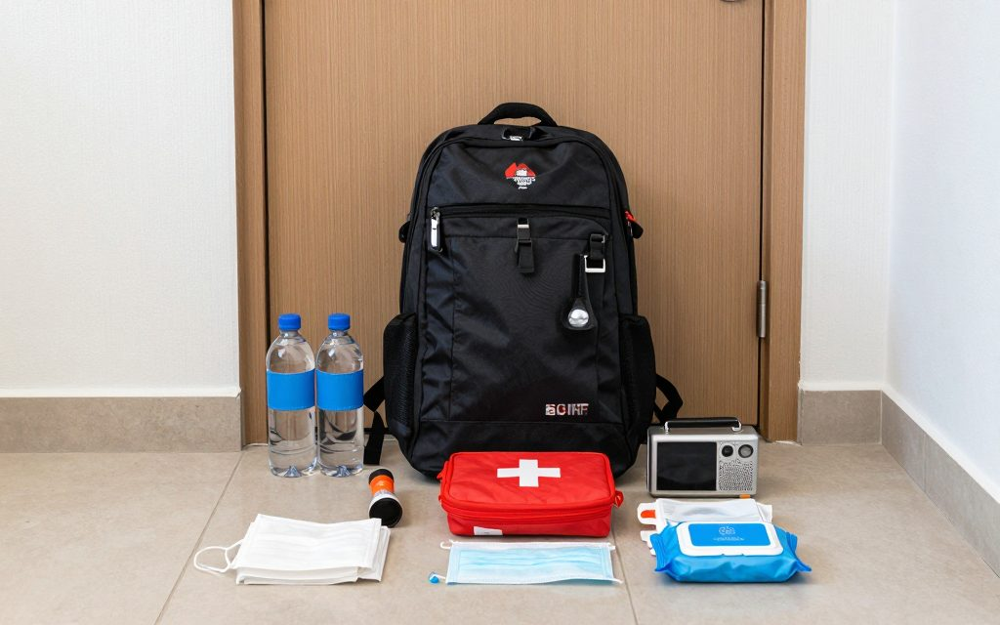

2-1. 공습경보가 울리면
이 꼭지의 근거 — 행정안전부 「비상시 국민행동요령」(서울특별시 안전누리집 게시본, 2026.3.5 수정) [1], 국민재난안전포털 [2]. 본문의 행동 요령은 모두 이 공식 자료에서 왔고, 공식 자료에 없는 내용은 💡우리 집 적용 상자로 따로 표시했다.

📷 해 질 녘 아파트 단지 — 경보가 울리면 가장 가까운 '지하'부터 떠올리세요 · AI 생성 이미지(이해를 돕기 위한 예시)

지금 나는 어디? — 먼저 내 칸을 찾으세요
| 지금 내가 있는 곳 | 바로 할 일 | 본문 |
|---|---|---|
| 🏢 집 (아파트) | 가스 잠그고 → 계단으로 → 대피소·지하로 | ①②③ |
| 🛗 엘리베이터 안 | 가장 가까운 층에서 내려 계단으로 | ② |
| 🚗 차 안 | 도로 오른쪽에 세우고, 키는 꽂아 둔 채 내려서 대피 | ④ |
| 🛒 마트·식당·극장 | 직원 안내에 따라 순서대로 지하로 | ⑤ |
| 👶 아이·어르신과 함께 | 경계경보 때 미리 먼저 움직이기 | ⑥ |
| 🌙 밤·잠든 시간 | 불 끄고, 불빛 새지 않게 한 뒤 대피 | ③ |
경보부터 구분하자
전쟁 위기 때 정부가 내리는 민방공 경보는 소리와 문자로 온다. 가장 많이 헷갈리는 세 가지는 이렇다 [1].
| 경보 | 언제 | 어떻게 알려 주나 | 할 일 |
|---|---|---|---|
| 경계경보 | 적의 공격이 예상될 때 | 음성 방송·재난문자 | TV·라디오를 켜고 정부 안내를 듣는다. 아이·어르신은 미리 대피 |
| 공습경보 | 공격이 임박했거나 진행 중일 때 | 사이렌 1분 + 음성 방송·재난문자 | 즉시 지하 대피소·지하 시설로 |
| 화생방경보 | 화학·생물·방사능 공격이 있거나 예상될 때 | 음성 방송·재난문자 | 호흡기 보호, 외부 공기 막힌 높은 층으로 (2-4 꼭지) |
핵 공격이 있거나 예상될 때는 별도의 핵경보가 사이렌·음성·문자로 나간다. 이때는 지하 시설이나 화장실처럼 창문 없는 곳으로 간다(2-3 꼭지) [1].
⚠️ 공습경보는 지하로, 화생방경보는 위로. 방향이 정반대다. 경보 이름을 끝까지 듣고 움직인다.
⏱ 첫 1분 — 몸부터 지킨다
① 가장 가까운 지하로
공습경보가 울리면 가까운 민방위 대피소나 지하 시설로 바로 간다. 대피소까지 갈 수 없다면 지하주차장이나 콘크리트 건물 안 창문 없는 곳이 차선이다 [1].
💡우리 집 적용 — 아파트에 산다면 가장 가까운 '지하'는 대부분 우리 동 지하주차장이다. 평소에 엘리베이터가 아니라 계단으로 지하주차장까지 내려가는 길을 한 번 걸어 두자. 비상구가 어느 쪽으로 열리는지, 주차장 몇 층까지 계단이 이어지는지 미리 알면 실제 상황에서 1분을 아낀다.
② 엘리베이터 말고 계단

📷 비상계단에서 지하주차장으로 — 평소에 한 번 걸어 두면 1분을 아낍니다 · AI 생성 이미지(이해를 돕기 위한 예시)
대피할 때는 화재와 정전에 대비해 엘리베이터 대신 계단을 쓴다 [1]. 엘리베이터 안에서 경보를 들었다면 가까운 층에서 내려 계단으로 옮긴다.
💡우리 집 적용 — 고층일수록 계단으로 내려가는 데 시간이 걸린다. 아이와 함께 실제로 우리 집에서 1층·지하까지 계단으로 몇 분 걸리는지 재 보자. 그 숫자가 우리 가족의 '대피 시간'이다.
10분 안에 — 집을 나서기 전 30초
③ 가스·전기·불빛
집을 나서기 전에 가스를 잠그고 전기 코드를 뽑는다. 밤이라면 전등을 끄고 불빛이 밖으로 새지 않게 한다 [1].
④ 차 안이라면

📷 집을 나서기 전 30초 — 가스 밸브 잠그고 코드 뽑기 · AI 생성 이미지(이해를 돕기 위한 예시)
운전 중이면 도로 오른쪽에 차를 세우고, 키는 꽂아 둔 채 가까운 대피 시설이나 지하 공간으로 간다 [1]. 키를 두는 이유는 길을 막은 차를 다른 사람이 옮길 수 있게 하기 위해서다.
⑤ 사람이 많은 곳이라면
극장·운동장·음식점처럼 사람이 많은 곳은 영업을 멈추고 손님에게 경보를 알린 뒤 순서대로 대피시킨다 [1]. 손님이라면 출구로 몰려가지 말고 직원 안내를 따른다.
1시간 안에 — 대피한 곳에서

📷 대피한 뒤에는 라디오·재난문자 같은 공식 정보만 · AI 생성 이미지(이해를 돕기 위한 예시)
- 정보는 공식 채널로만. TV·라디오·재난문자로 나오는 민방위 경보통제소 안내를 따른다. SNS에 도는 소문은 믿지도, 퍼뜨리지도 않는다 [1].
- 대피소 질서. 대피소에서는 질서를 지키고, 오래 머물게 되면 대표자를 정해 질서를 유지한다 [1].
- 가족 확인. 흩어져 있는 가족과는 문자로 위치만 짧게 주고받는다. 통화는 통신망을 막을 수 있다.
💡우리 집 적용 — 휴대전화가 안 될 때를 대비해 집결 장소 두 곳(예: 우리 동 지하주차장 ○층 계단 앞 / 가까운 지정 대피소)을 가족이 미리 정해 둔다. 아이 가방에는 부모 연락처와 집결 장소를 적은 카드를 넣어 둔다.
72시간 버티기 — 경보가 끝나도 끝난 게 아니다
- 해제도 방송과 문자로 온다. 해제 안내를 들은 뒤에도 공습이 다시 올 수 있으니 정부 방송을 계속 듣는다 [1].
- 부상자를 돕는다. 해제 뒤에는 주변 부상자 구조에 함께한다 [1].
- 낙진이 있는 통제구역이라면 낙진이 가라앉을 때까지 지하 깊은 곳에서 안내를 기다린다(2-3 꼭지) [1].
- 집으로 돌아오면 단전·단수가 이어질 수 있다. 물·식량·라디오 준비는 1부 「72시간 비상배낭」, 고립 생활은 2-6 꼭지를 본다.
⚠️ 절대 하지 말 것
- 엘리베이터 타기 — 정전·화재 때 갇힌다 [1].
- 화생방경보에 지하로 내려가기 — 화생방은 높은 층이다(공습경보와 반대) [1].
- SNS 소문 따라 움직이기 — 정부 안내만 따른다 [1].
- 차를 길 한가운데 두고 키까지 들고 가기 — 오른쪽에 세우고 키는 꽂아 둔다 [1].
- 창문 많은 거실에 머물기 — 창문 없는 곳·지하로 간다 [1].
👶 아이·어르신·반려동물과 함께라면
⑥ 한 박자 먼저
경계경보 단계에서 어린이와 노약자는 미리 대피시키는 것이 권장된다 [1]. 공습경보가 울린 뒤 고층에서 아이를 안고 계단을 내려가는 것은 생각보다 오래 걸린다. 경계경보 문자가 오면 바로 움직이자.
💡우리 집 적용 — 거동이 불편한 어르신이 같은 동에 사신다면, 평소 관리사무소와 이웃 비상연락망(7-3 꼭지)에 '도움이 필요한 세대'로 알려 두자. 반려동물은 이동장과 목줄을 현관 가까이 두면 대피가 빨라진다(대피소 반려동물 출입 기준은 지자체 안내 확인 필요).
🏢 아파트에 산다면 — 오늘 할 일 체크리스트

📷 현관 옆 비상배낭 — 생수·간편식·손전등·상비약·라디오 · AI 생성 이미지(이해를 돕기 위한 예시)
- [ ] 우리 집에서 가장 가까운 민방위 대피소 찾기 (안전디딤돌 앱, 지도 앱에서 '민방위 대피소' 검색) [1]
- [ ] 계단으로 지하주차장·대피소까지 직접 걸어가 보기, 걸린 시간 적기
- [ ] 가스 밸브 위치를 가족 모두가 알기
- [ ] 가족 집결 장소 두 곳 정하기
- [ ] 현관 근처에 비상배낭 두기 (생수·간편식·손전등·상비약·라디오와 건전지·물티슈·마스크) [1]
근거와 출처
| 번호 | 기관 | 문서 | 주소 | 개정·확인 |
|---|---|---|---|---|
| [1] | 행정안전부 (서울특별시 비상기획관 민방위담당관 게시) | 비상시 국민행동요령 — 공습·경계·화생방·핵 경보 시 행동요령 | https://news.seoul.go.kr/safe/archives/516212 | 2026.03.05 수정 / 2026.10.22 확인 |
| [2] | 행정안전부 | 국민재난안전포털 국민행동요령 | https://www.safekorea.go.kr | 원문 대조 예정 |
확인 필요 (출간 전) - 국민재난안전포털 원문과 문구 대조, 민방공 경보 5종 전체 명칭 확인 - 대피소 반려동물 동반 기준(지자체별) - 경계경보·화생방경보 사이렌 사용 여부 최신 기준
제2부 「전쟁·안보 위기」 대표 꼭지 · 갱신 2026-10-23